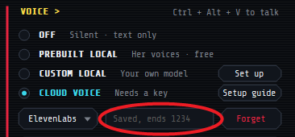
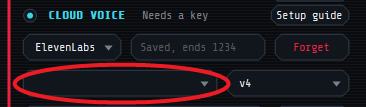

Set up Capri
1Install Windows only
- Download
- Open
Capri-Setup.exe - “Windows protected your PC”? More info → Run anyway
- Install
Windows warns because Capri is new and not signed yet. The code is open on GitHub.
2Her brain free, runs on your PC
- The Capri Mainframe opens by itself
- Keep NORMAL picked: Start with this!
- Set up her brain
- Wait for the download. She says hi when it's done
Already use Ollama? Open it, then press Refresh.

Slow PC, or the download fails?
Pick HIGHER: a free NVIDIA key. Nothing to download, and her replies are fast. Most NVIDIA models can't see your screen. Her first pick can.
- Mainframe → HIGHER → Free key, or open build.nvidia.com
- Sign in or make a free account. NVIDIA may ask to verify your phone
- Generate API Key, then copy it. It starts with nvapi-
- Paste it in the box under HIGHER → Connect
Have an OpenAI, Claude or DeepSeek key with credits? Pick MAX INTELLIGENCE and paste it there.
3Her voice free, Fish Audio or ElevenLabs
Our project-provided synthetic voice is in Capri's Mainframe and runs on your PC. You may connect third-party text-to-speech services, but we don't provide guides for voice cloning tools. Our only voice-design help is a text prompt for making a synthetic voice.
Only use voices you have the necessary rights and permissions to use, and follow the provider's terms. We do not endorse unauthorized cloning or impersonation of voice actors or other individuals. Capri prohibits cloning or impersonating a living person's voice without explicit, informed consent or other valid authorization.
Skip this and she talks with her free voice, which the installer sets up. Fish Audio has a free tier. ElevenLabs uses your credits. OpenAI or your own voice model: Help → Her voice.
Fish Audio free tier
- Sign up at fish.audio
- API Keys → Create New Key, then copy it
- Mainframe, under VOICE: CLOUD VOICE → Fish Audio. Its panel opens
- Paste the key under Key
- Voice: make your own with Fish Audio's Voice Design, then paste its link. Capri prohibits cloning or impersonating a living person's voice without explicit, informed consent or other valid authorization
- Test, then Use this server
Or ElevenLabs uses your credits
- Sign up at elevenlabs.io
Design her voice
- ElevenCreative → Voice Creation → Voice Design → Create new

- Paste this prompt, then create the voice
Her voice is light, bright, and buoyant, with a playful lilt that rises at phrase endings, as if sharing a secret joke. Quick, bouncy pacing shifts between mock-innocent sweetness and a sly, knowing edge. She sounds close and airy, whispering directly inside the listener’s mind. Her voice has a vivid holographic quality: crystalline synthetic resonance layered beneath her femininity, as though projected through shimmering digital light. A faint electronic halo surrounds each syllable, with metallic overtones, spectral echoes, and flickers of static rippling through her voice like glitches in a translucent projection. When her mischief sharpens, her voice briefly fractures into digital artifacts, subtle pitch warps, and sparkling distortions. Beneath the playful act, her tone occasionally softens into something fragile and haunting, hinting at the Project Capricorn past she cannot escape. She feels enchanting, mischievous, and unmistakably nonhuman.
- Voices → My Voices → ⋯ → Copy Voice ID


API key
- Bottom left: Developers

- API Keys → Create Key, name it Capri

- Turn Restrict key off
- Create Key, then copy it before you close the popup
In the Mainframe
- Under VOICE: CLOUD VOICE, then ElevenLabs in the menu under it. Close Fish Audio's panel if it opens. Before 0.7.6: ELEVENLABS
- Paste the key → Connect

- Clear the Voice ID box, then paste your Voice ID

- Model menu → v4
- Test
4Talk to her
- Pencil
- type to her
- "Open Spotify"
- she opens apps, games and sites, and skips songs
- "Play Blinding Lights"
- she plays it on Spotify, or YouTube without it
- "Close Discord"
- she switches to, minimizes or closes open apps and tabs
- Watch my screen
- Mainframe → Settings: she comments as you play
- PREBUILT LOCAL
- in the Mainframe: her free voice, runs on your PC, no credits
- CUSTOM LOCAL
- in the Mainframe: a voice model you run on your PC
- CLOUD VOICE
- in the Mainframe: Fish Audio (free tier), ElevenLabs (uses your credits) or OpenAI
- OFF
- in the Mainframe under VOICE: no voice, she types
- Wave
- voice chat, free unless ElevenLabs is picked
- Mic button
- mute your mic while chatting
- Ctrl + Alt + V
- start or stop voice chat
- Ctrl + Alt + N
- mute your mic while chatting
- Drag
- sit her on a window
- Shift + drop
- sit her right there
- Ctrl + drop
- she hangs on right there, click her to let go
- Wander around
- right-click her, Move: she hops between your open windows
- Ctrl + Alt + C
- get her off your cursor
- Tray icon
- menu, Mainframe, quit
Stuck?
- “ElevenLabs rejected the key”
- That isn't the key. Keys start with
sk_. Make a new one and paste it. - “Key is missing permissions”
- Make a new key with Restrict key turned off.
- “Voice not found”
- Paste the Voice ID of the voice you designed, from My Voices, not its name.
- “Out of ElevenLabs credits”
- Credits refill each month. She uses about one per letter she says.
- “Free tier usage disabled”
- Turn off your VPN and try again.
- She can't hear you
- Pick your mic in the Mainframe. Still nothing? Windows Settings → Privacy & security → Microphone → let desktop apps use it.
- “Item Not Found” when you open the installer
- Your browser or antivirus held it back. In Chrome or Edge, press Ctrl + J and pick Keep. Antivirus? Restore it from quarantine. Then open it from your Downloads folder.
- Antivirus flags it
- A false alarm on a new, unsigned app. Check the code on GitHub.
- Still stuck?
- Check the Help page, or ask in the Discord.
Guide by @Dancer, screenshots by @BaldDcModWithSmalD, both from the Discord. Thank you!